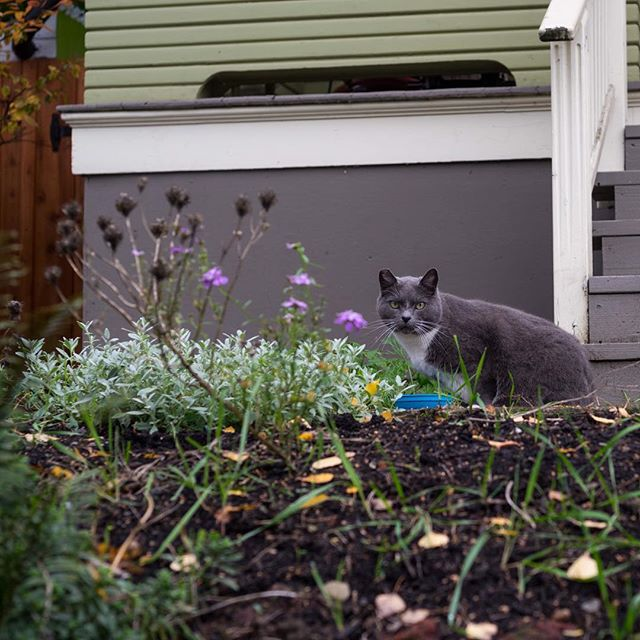
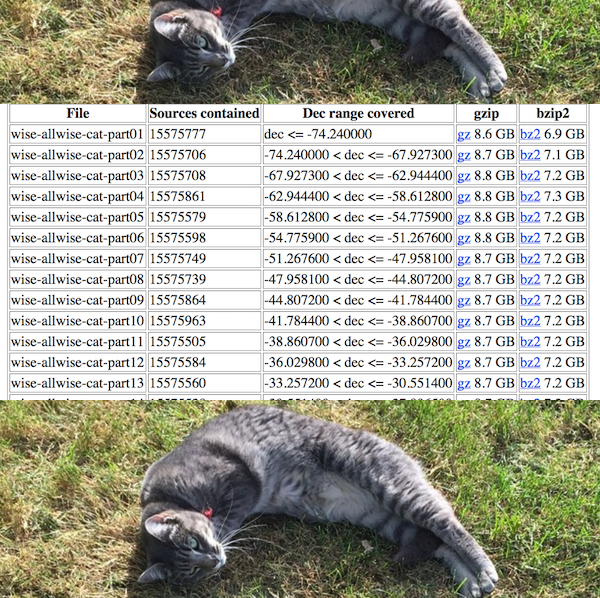
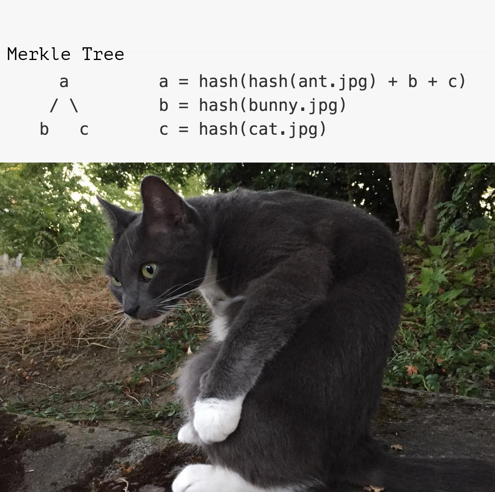
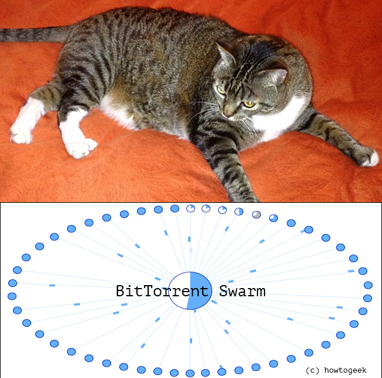
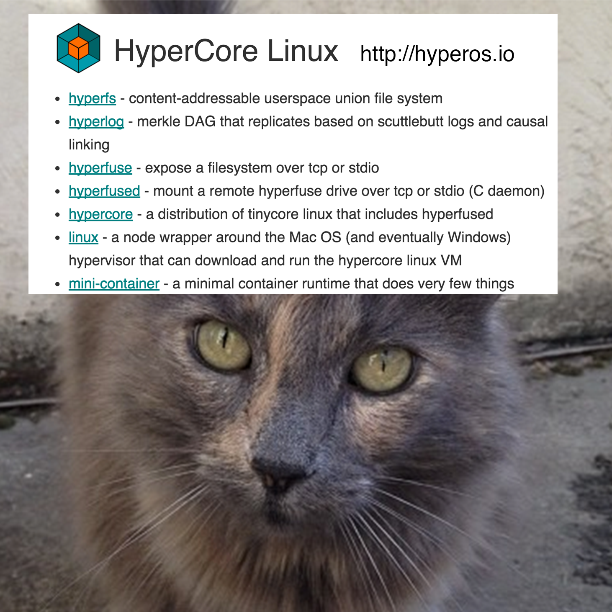

use ↔ to navigate



Independently funded by grants to produce
open source tools (750 modules and counting!)

Civic hackers, data journalists, data scientists
Main goal: Scientific
data
reproducibility
We are trying to make a peer-to-peer Dropbox for datasets
"I want to write a snarky paper on our inability to replicate (or reproduce?) the meanings of replication and reproducibility" - @ctitusbrown
"Move the code to the data"

Our three proposed rules for moving data
1. Only download what you need
2. Share what you have
3. If it's still too slow then resort to other methods

peerflix!
Replication get the data
Sharing re-upload the data
Version control roll back the data
Collaboration fork the data
Containers run the code on the data
# to share a folder with dat
$ dat share
# to download the data
$ dat 2c26b46b68ffc68
Node.js
- Designed for I / O
- Everything is a stream
- Linux / Mac / Windows / IE / Chrome / Firefox / Safari / Electron
- NPM!



PublicBits.org a data tracker and registry

GovLab, Freeman Lab, FiveThirtyEight, California Civic Data Coalition, Indiana University, Trillian Project, The Wurm Lab, USGS, Ocean Health Index, International Monetary Fund, Data & Society, BetaNYC, Rackspace, Google, Digital Ocean, Jupyter Project...
and you!Tell us about your use case or be a beta user! #dat on freenode, @dat_project on twitter, max@maxogden.com